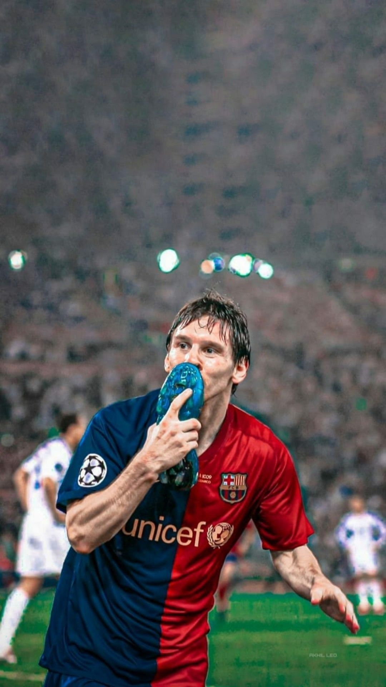
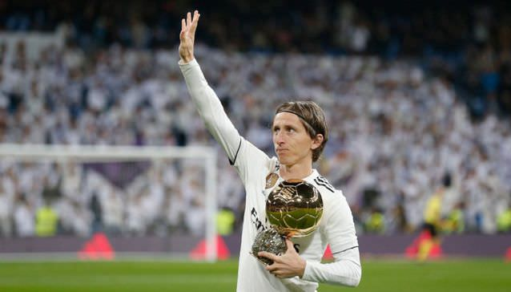
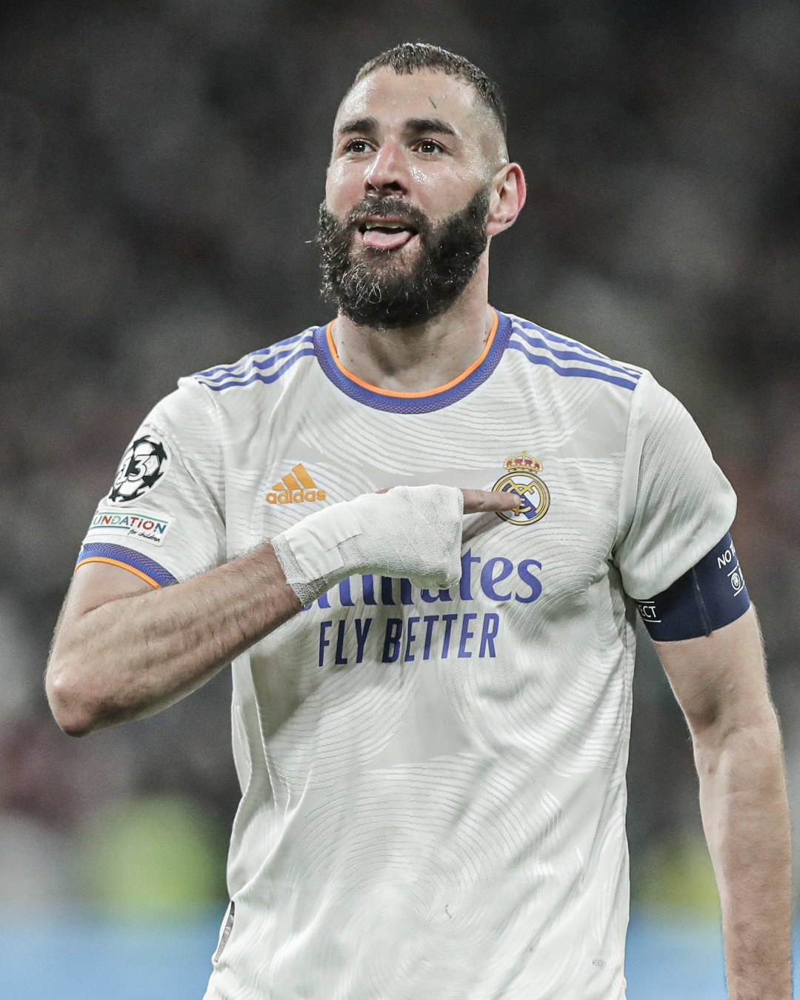

2008: CRISTIANO RONALDO
2009: LIONEL MESSI
2010: LIONEL MESSI

2011: LIONEL MESSI

2012: LIONEL MESSI
2013: CRISTIANO RONALDO

2014: CRISTIANO RONALDO

2015: LIONEL MESSI
2016: CRISTIANO RONALDO

2017: CRISTIANO RONALDO
2018: LUKA MODRIC
2019: LIONEL MESSI
2020: LEWANDOSKI/NEYMAR

2021: LIONEL MESSI
2022: KARIM BENZEMA
2023: LIONEL MESSI